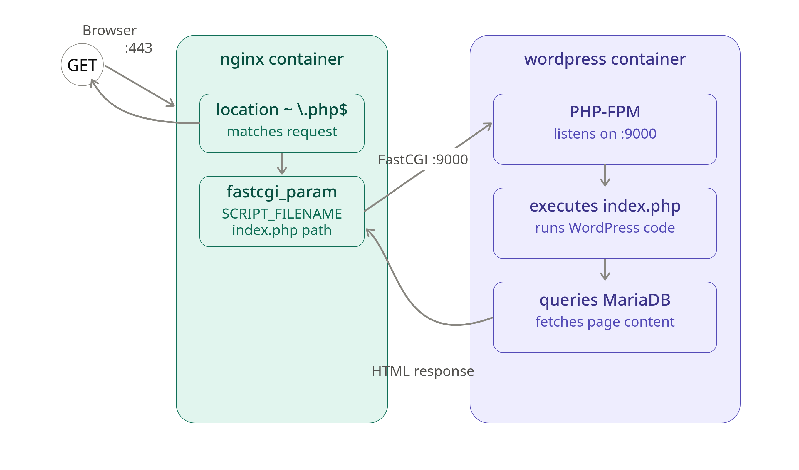
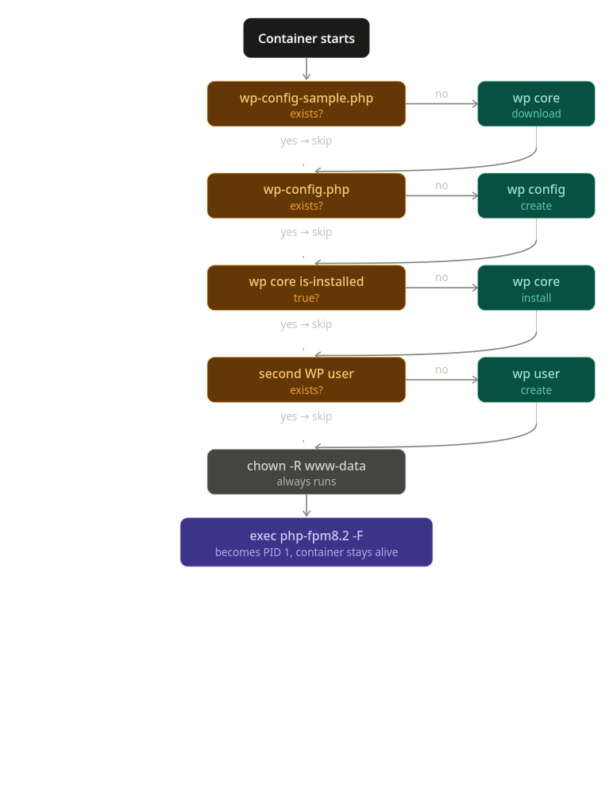

Wordpress + PHP FPM

- FastCGI: Is the protocol used to send data to
php-fpm SCRIPT_FILENAMEis a FastCGI parameter nginx sends to PHP-FPM, telling it the absolute filesystem path of the PHP file to execute.index.php: Wordpress entrypoint.
/var/www/htmlis the document root, the base directory where WordPress'sindex.php,wp-admin/,wp-content/,wp-config.php, etc. all physically live, and from which nginx serves/routes every request.
/var/www/html/
├── index.php ← the entry point
├── wp-config.php ← generated by wp config create
├── wp-login.php
├── wp-admin/
├── wp-includes/
└── wp-content/
├── themes/
├── plugins/
└── uploads/
Dockerfile
FROM debian:bookworm-slim
RUN apt-get update && apt-get install -y \
php-fpm \
php-mysqli \
php-curl \
php-gd \
php-mbstring \
php-xml \
php-zip \
mariadb-client \
curl \
&& rm -rf /var/lib/apt/lists/*
# Install WP-CLI it's command line wizard like to set up WP
RUN curl -O https://raw.githubusercontent.com/wp-cli/builds/gh-pages/phar/wp-cli.phar \
&& chmod +x wp-cli.phar \
&& mv wp-cli.phar /usr/local/bin/wp
COPY conf/www.conf /etc/php/8.2/fpm/pool.d/www.conf
COPY tools/entrypoint.sh /entrypoint.sh
RUN chmod +x /entrypoint.sh
EXPOSE 9000
ENTRYPOINT ["/entrypoint.sh"]
PHP-FPM configuration
php-fpm (fastCGI process manager): is the service which executes the .php code. usually index.php provided by wordpress.
- The main configuration files we need is called
www.conf, it's a php-fpm pool configuration file. A "pool" in php-fpm terms is a group of worker processes configured together with shared settings (user/group to run as, how many workers, what to listen on, etc.). reference this
www is just the default pool name that ships with PHP-FPM's default install — you could technically have multiple pools (e.g., one for a low-traffic site, one for a high-traffic site, each with different worker counts), but for your setup, one pool (www) is all you need.
What this specific file controls (recap):
listen— where PHP-FPM accepts connections (you're changing this from a Unix socket to TCP port 9000)user/group— which Linux user the worker processes run aspm,pm.max_children, etc. — how PHP-FPM manages/scales its worker processesclear_env— whether environment variables (like your DB credentials) are passed through to PHP scripts
[www]
user = www-data
group = www-data
listen = 9000
pm = dynamic
pm.max_children = 5
pm.start_servers = 2
pm.min_spare_servers = 1
pm.max_spare_servers = 3
clear_env = no
listen = 9000: this is the fix: PHP-FPM now listens on TCP port 9000 (all interfaces) instead of a Unix socket, so nginx (in a separate container) can actually reach ituser/group = www-data— matches Debian's default web server user, consistent with what we saw earlier for nginx's fallback userpm = dynamic+ related settings — controls how many PHP worker processes to spawn/scale, standard defaults, fine for a small projectclear_env = no— important — by default PHP-FPM clears environment variables for security; you need your.env-sourced DB credentials to actually be visible to PHP, so this must beno
Wordpress script

#!/bin/sh
set -e
# Since we have a persistent db throw named voluems, then checking if the config is already exists.
#
#
# WordPress core files
if [ ! -f /var/www/html/wp-config-sample.php ]; then
wp core download --allow-root --path=/var/www/html
fi
# Generate wp-config.php with database credentials
if [ ! -f /var/www/html/wp-config.php ]; then
wp config create \
--allow-root \
--path=/var/www/html \
--dbname="${MYSQL_DATABASE}" \
--dbuser="${MYSQL_USER}" \
--dbpass="$(cat /run/secrets/db_password)" \
--dbhost="mariadb"
fi
# Installs the actual wp
if ! wp core is-installed --allow-root --path=/var/www/html; then
wp core install \
--allow-root \
--path=/var/www/html \
--url="https://${DOMAIN_NAME}" \
--title="Inception" \
--admin_user="${WP_ADMIN_USER}" \
--admin_password="$(cat /run/secrets/wp_admin_password)" \
--admin_email="${WP_ADMIN_EMAIL}"
fi
#Creating the second user (root created while installing it)
if ! wp user get "${WP_USER}" --allow-root --path=/var/www/html >/dev/null 2>&1; then
wp user create \
--allow-root \
--path=/var/www/html \
"${WP_USER}" \
"${WP_USER_EMAIL}" \
--user_pass="$(cat /run/secrets/wp_user_password)" \
--role=editor
fi
# change user:group for every file in /var/www/html, same user:group from www.conf
chown -R www-data:www-data /var/www/html
exec php-fpm8.2 -F
Wordpress has 2 users:
1) Administrator the WordPress role with full application-level permissions, created automatically by wp core install
2) Editor (second user), a WordPress role with limited application-level permissions
MariaDB has 2 users with a main db called wordpress: 1) Root user 2) wp_user : limited to the wordpress database only, used by wordpress's actual DB connection.
WordPress connects to:
- Database name:
wordpress(MYSQL_DATABASEvalue) - Using account: (
MYSQL_USERvalue, withdb_password)